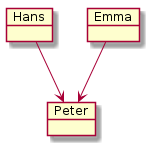
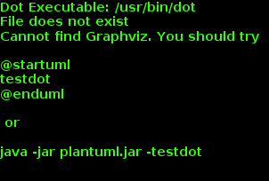
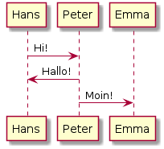

Diagrammerstellung auf effektive Art und Weise¶
Mein Problem¶
Die letzten Wochen habe ich unter anderem damit verbracht ein Datenmodell von Objekten innerhalb eines kundenspezifischen SW-Entwicklungsprozesses zu erstellen.
Wie so oft fängt man erstmal In Powerpoint an, um dann möglichst schnell zu Visio zu wechseln oder gleich ein spezielles Datenmodellierungstool zu verwenden. Allerdings gibt es bei all diesen Tools eine Reihe von Problemen bzw. Unannehmlichkeiten:
Powerpoint, Visio und Co. Super Sache, wenn man einmalig 10-20 Objekte darstellen und verlinken möchte. Werden es mehr Objekte oder wird die Darstellung immer wieder mal ergänzt verwendet man mehr Zeit mit dem Layout als mit dem eigentlichen Inhalt selbst (Platz schaffen, Objekte verschieben, Verbindungen nachziehen, ...) Datenmodellierungstools wie Enterprise Architect, MySQL Workbench und Co. Eierlegendewollmilchsäue, die in der Regel jeden Entwickler glücklich machen. Doof nur, wenn das Team nicht nur aus Entwicklern besteht und die Ergebnisse verschiedenen Personenkreisen präsentiert werden müssen: Manager, Projektleiter, befreundeter Arbeitskollege, ... Bevor der Kollege verstehen kann, was er dort überhaupt sieht, vergehen dann in Summe schnell einmal 15-20 Minuten. Und das ohne jemals über den Inhalt diskutiert zu haben. Ich suchte also etwas, bei dem wir mit der graphischen Darstellung wenn möglich gar nicht in Kontakt kommen, was man aber trotzdem einem Kollegen schnell erklären kann, ohne dass er selbst das Präsentationstool oder eine spezielle Syntax verstehen muss.
Idealerweise sollte man die einmal erstellte Dokumentation auch einfach wiederverwenden können, z.B in Word oder Powerpoint, als Bilder in Wikis oder zur Anzeige direkt in der Lieblings-IDE.
Ach ja, eine Versionierung z.B in git mit der Möglichkeit sinnvolle Diffs zu machen, wäre natürlich auch super
Nach etwas Suchen und Testen von 4-5 Möglichkeiten bin in bei PlantUML hängen geblieben.
Meine Lösung: PlantUML¶
PlantUML ist eine Beschreibungsart zur Definition von Diagramme und Sequenzen. Man beschreibt also textuell das gewünschte Diagramm und PlantUML erzeugt daraus dann schöne Diagramm-Bilder.
Der Schwerpunkt liegt dabei auf dem eigentlichen Inhalt und weniger auf der graphischen Representation, so dass man super schnell Inhalte erzeugt. Will man aber das Layout anpassen, z.B Farben ändern oder Blöcke verschieben, ist man schnell aufgeschmissen. Ok, Farben gehen zum Glück in vielen Fällen :)
Die Sprache¶
@startuml
object Hans
object Emma
object Peter
Hans --> Peter
Emma --> Peter
@enduml
Daraus generiert PlantUML dann folgendes:

Natürlich gehen auch komplexere Sachen:
@startuml
object Hans {
name:Hans
Status: Opa
}
object Emma {
name:Emma
Status: Oma
}
Hans --> Peter
Emma --> Peter
Peter --> Max
Anne --> Max
Hans ..> Max
Emma ..> Max
@enduml

Es gehen aber Sequenz-Diagramme:
@startuml
Hans -> Peter: Hi!
Peter -> Hans: Hallo!
Peter -> Emma: Moin!
@enduml

Was alles geht und wie man es verwendet erfährt man am besten auf der PlantUML Webseite.